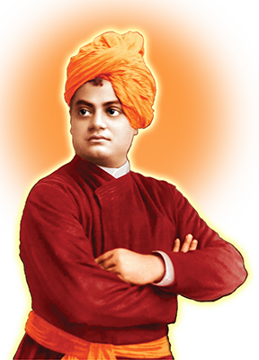

A Tribute to Swami Vivekananda
"Swami Vivekananda- The Youth Inspiration"
| Born | Swami Vivekananda born in Culcutta,Bengal India 12 January 1863. |
| Original name | The real name of Swami Vivekananda is Narendranath Dutta. |
| Family background |
|
| Nature of Swami Vivekananda | Swami Vivekananda was interested in spirituality from a young age. He meditade brfore images of Shiva,Rama,Sita and Mahavir Hanuman. As a child he is naughty and restless and later attracted by monks. |
| Education & Qualification |
|
| Guru of Swami Vivekananada | Ramkrishna Paramhansh is the Gure of Swami Vivekananda, met him in 1881 who become his spiritual focus after his father's death. |
| Became Monk | In December 1886, Narendranath took monastic vows and also took name "Swami Vivekananda". |
| Travel diary | Swami Vivekananda travelled across many countries and in india.
|
| Skills and Work | Swami vivekananda was complete artist, having skills of painting,singning,writting and powerful speaker also. He wrote many books in Bengali and English languages. |
| Death | Swami Vivekananda died on 4 July 1902 at 9:20 p.m.He fulfilled his prophecy that he would not live 40 years. He died during meditation.( also called mahasamadhi) |
| National Youth Day | 12th Januuary ,his birhday is celebrated as National Youth Day. |
| Popular quote of Swami Vivekananda | "Arise,awake, and stop not till the goal is reached." |
To know more detail check out Swami Vivekananda on wikipedia.